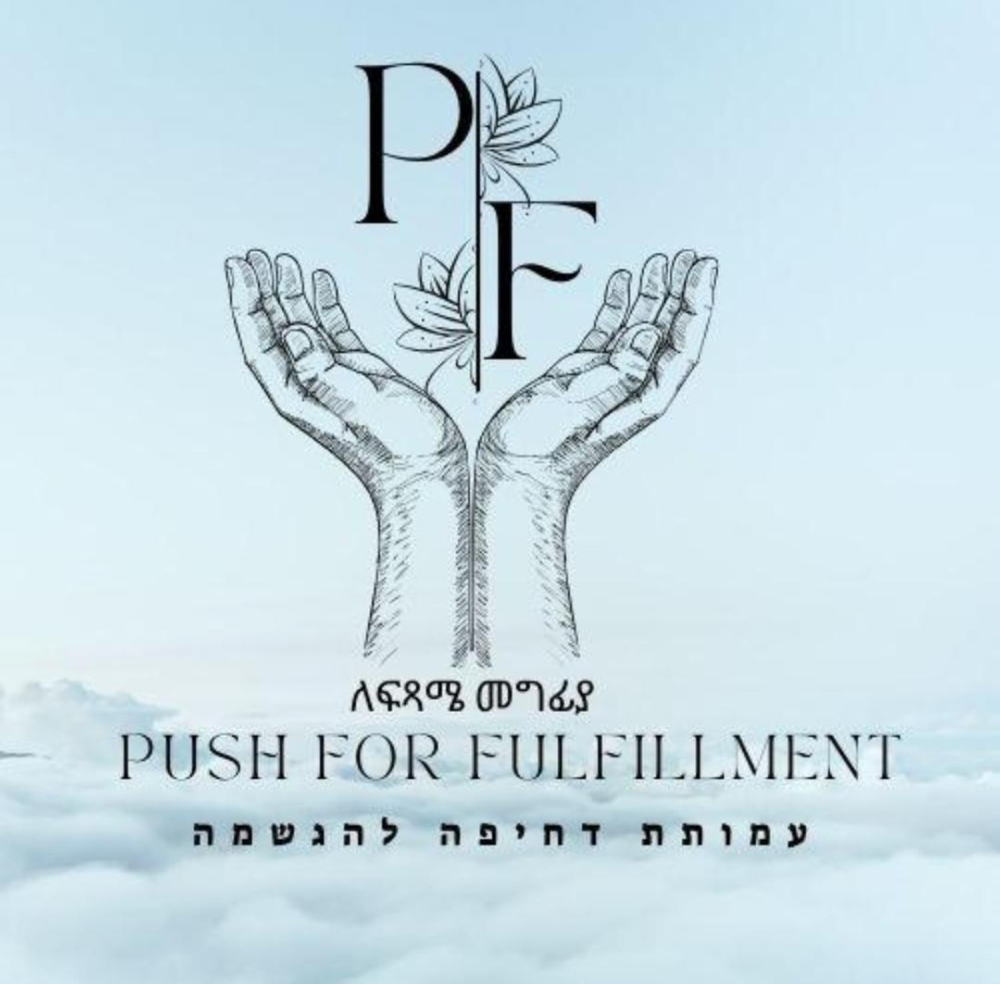

The logo is a hand-drawn pair of hands cradling a lotus, set on a pale sky — quiet, reverent, slightly classical. The current Tailwind theme is loud-navy + gold, which fights it. Three real options below.
A — Sky Recommended
Honor the logo

Tell us what you need. A volunteer will follow up within 48 hours. ספרו לנו מה אתם צריכים. מתנדב יחזור אליכם תוך 48 שעות.
Continue →B — Refined Navy + Gold
Polish the current theme
Tell us what you need. A volunteer will follow up within 48 hours. ספרו לנו מה אתם צריכים. מתנדב יחזור אליכם תוך 48 שעות.
Continue →C — Sky + Ink + Embers
Hybrid: calm base, warm action
Tell us what you need. A volunteer will follow up within 48 hours. ספרו לנו מה אתם צריכים. מתנדב יחזור אליכם תוך 48 שעות.
Continue →Why A is recommended
The logo was chosen by your manager and is the strongest brand signal you have. Option B keeps the current code's colors but visually fights the logo (saturated gold + cool ink-drawing is uncomfortable). Option C is the most flexible but adds an extra accent color the team will have to be disciplined about. Option A puts the logo at the center and lets the rest of the UI breathe — appropriate for an NGO serving a sensitive caseload.